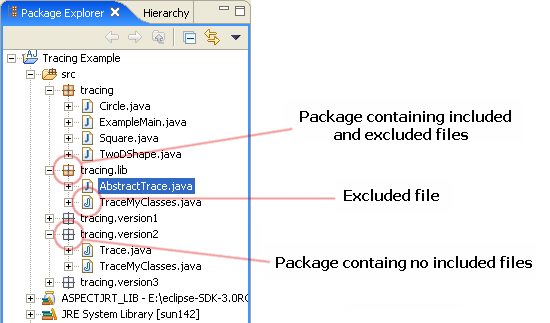
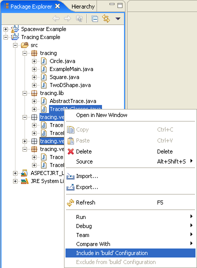
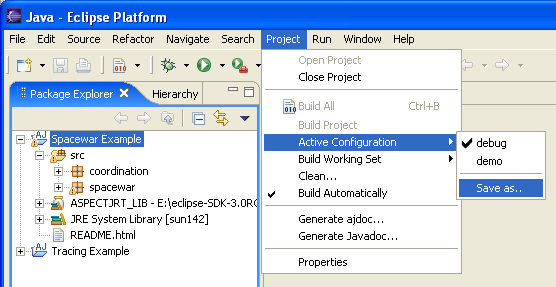
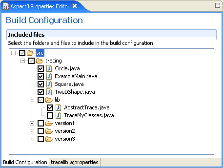

Copyright © 2004
Eclipse.org. All Rights Reserved
Build Configurations
Introduction
By default
all source code contained in a project’s source folder is included in the
compilation of that project. Build configurations allow changes to the set of
files that are compiled, so that files can be excluded from the build. If
desired, multiple configurations can be defined and easily switched between. An
example use of this feature is if you have a debug aspect which you only want
to take effect sometimes. You could then define one build configuration which
includes the debug aspect, and one which excludes it.
The way
build configurations are handled changed in AJDT v1.1.11. If you are
familiar with the previous way of using build configurations, please consult the
build configuration compatibility
guide.
The active build
configuration
In a new
project there should be one build configuration. If there isn’t one initially,
it will be generated automatically, with everything included by default. This
then becomes the active configuration.
Altering the active build
configuration
Source
files and packages can be included and excluded from the active build
configuration directly from the Package Explorer. You can simply right-click on
a package or source file and select either the include
or exclude menu options (if the resource is already included, the include
option will be greyed out, and vice versa). The selected resource will then be
included or excluded from the active build configuration, and a rebuild of the
project will occur using the new configuration.
Naturally
it is useful to be able to quickly see which resources are included and which
are excluded. The Package Explorer does exactly this, by updating the icons
appropriately, as shown below.

Multiple
files and packages can be selected together by holding down the shift or
control keys, and then included or excluded as a group, as shown below.

Working with multiple
build configurations
If you have
used the above include and exclude actions to define a useful build
configuration, you may want to preserve this in a new build configuration. You
can do this via the Project > Active
Configuration > Save as... menu option, as shown below.

After entering
a name for the new build configuration, a new file is created to store that
configuration. Build configuration files have the .ajproperties file extension, and appear in the Package Explorer as
shown below.

The new configuration
file then becomes the active one, unless the option on the save dialog was deselected. A different icon is used to illustrate which
configuration file is the active one (tracelib.ajproperties
is the active one in the above screenshot). Subsequent changes to the active
configuration, made via the Package Explorer include and exclude actions, are
stored in this configuration file.
Now that we
have more than one configuration, we need to be able to switch between them.
There are several ones of doing this:
- By right-clicking on a build
configuration file in the Package Explorer and selecting Activate this configuration.
- By selecting from the list of
configurations in the Project >
Active Configuration menu.
- By selecting from the list of
configurations in the drop-down of the Build AspectJ Project button.
Editing .ajproperties
files
As seen
above, the active configuration can be changed using right-click actions in the
Package Explorer. Sometimes, however, it might be useful to be able to change
other configurations, without having to first activate them. This can be done
by double-clicking on a .ajproperties file, which opens the configuration in the AspectJ Properties Editor, as shown
below.

This editor
contains two tabs, one showing a tree of resources with checkboxes, the other showing
a direct view of the file’s contents. In the tree view resources can be
included and excluded by selecting or unselecting the appropriate checkboxes.
The
properties editor can be used to edit any configuration file, whether or not it
is the active one. If it is the active one, saving the file will result in the
current project being built using the new configuration.
Using .ajproperties files
with Ant
The format
used in .ajproperties files is that
of standard properties files. Here are the contents of an example configuration
file:
src.includes = src/
src.excludes = src/tracing/version1/,\
src/tracing/version2/,\
src/tracing/version3/,\
src/tracing/lib/TraceMyClasses.java
This format
was chosen because of the expressive nature of having separate include and
exclude lists, plus the ease with which tools outside of Eclipse can make use
of this syntax.
If want to
build your Eclipse projects using Ant, you can either convert your .ajproperties files to the old .lst format (see the build configuration compatibility
guide for more details), or you can process the .ajproperties files directly in
<project
name="ajprops-example" default="compile" >
<property name="aspectj"
value="c:/aspectj1.2" />
<property name="aspectjrt"
value="${aspectj}/lib/aspectjrt.jar" />
<property name="aspectjtools"
value="${aspectj}/lib/aspectjtools.jar" />
<property
file="tracelib.ajproperties"/>
<taskdef
resource="org/aspectj/tools/ant/taskdefs/aspectjTaskdefs.properties">
<classpath>
<pathelement
location="${aspectjtools}"/>
</classpath>
</taskdef>
<target name="compile" >
<iajc
classpath="${aspectjrt}" srcdir="."
includes="${src.includes}"
excludes="${src.excludes}"/>
</target>
</project>
Note that
there is a limitation here in that Ant processes the includes and excludes in a
slightly different way to Eclipse. For example, if you include
“lib/AbstractTracing.java” but exclude “lib/” then as a build configuration in
Eclipse, the source file will be an included entry in an otherwise excluded
package, but Ant processes the includes first, then removes the matching
excludes, so everything under “lib/” will be excluded (thus overriding the
include entry). This issue should be addressed in a future version of the iajc Ant task.